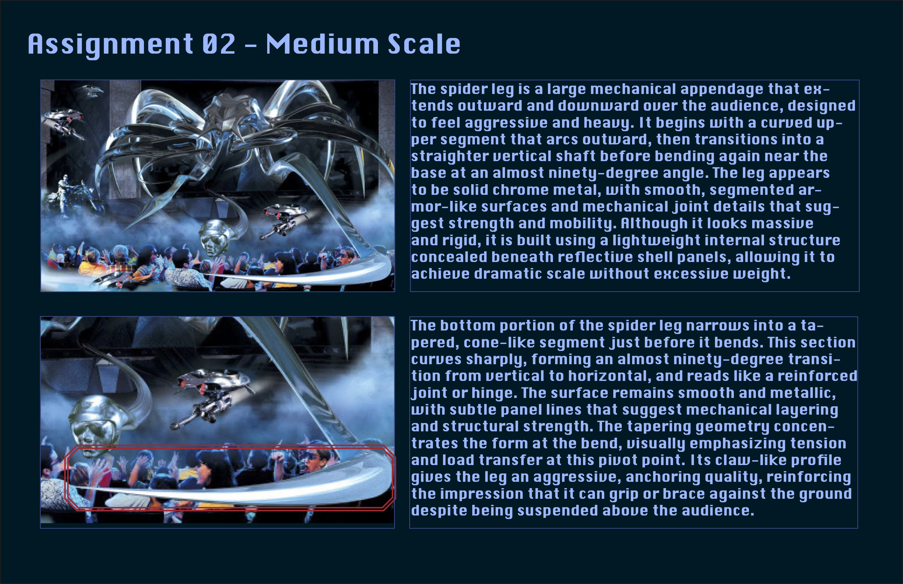
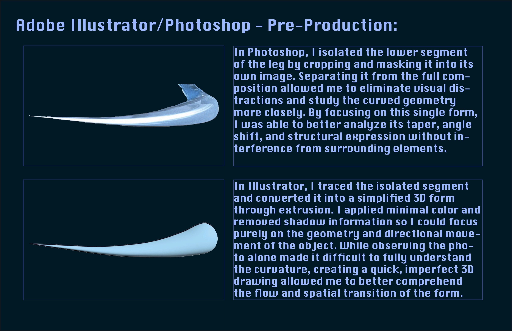
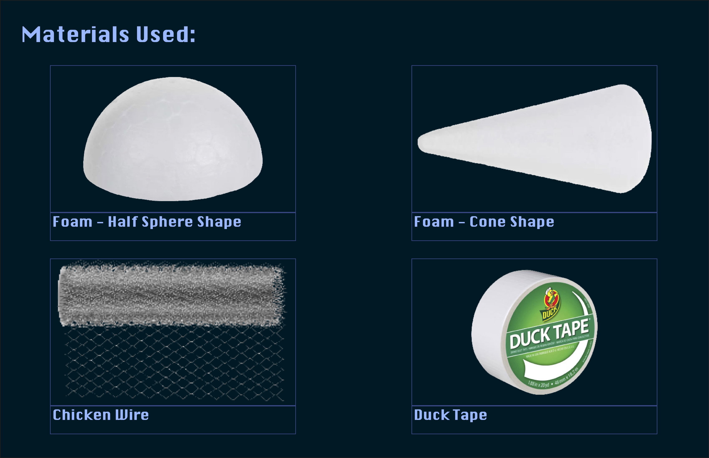
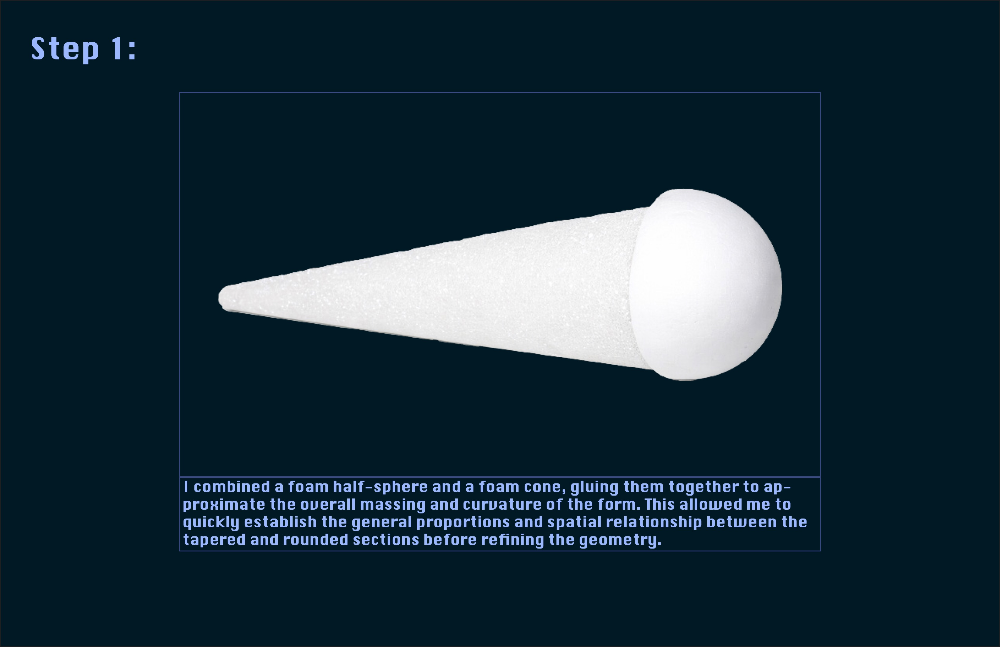
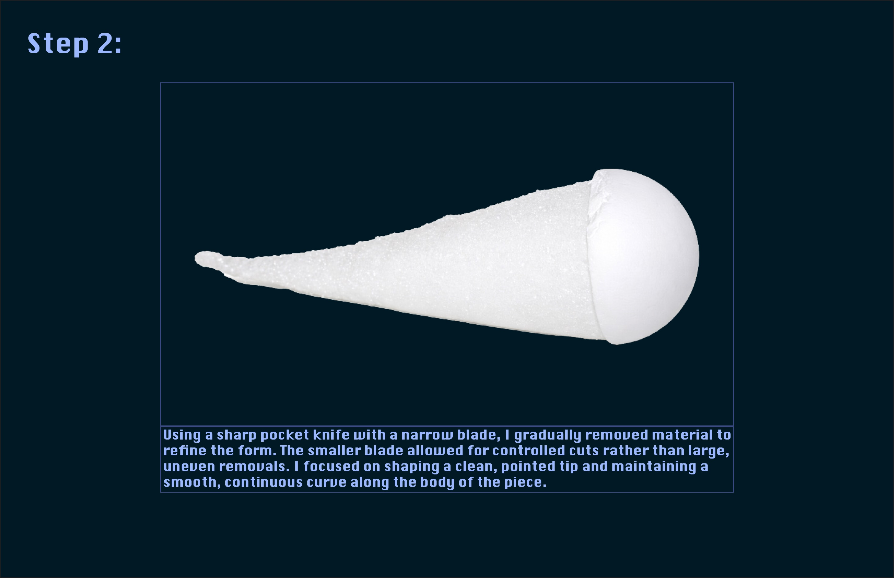
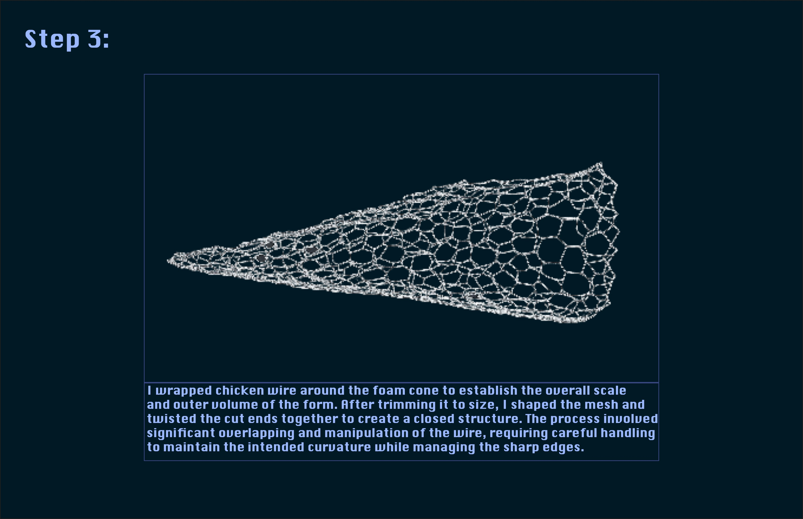
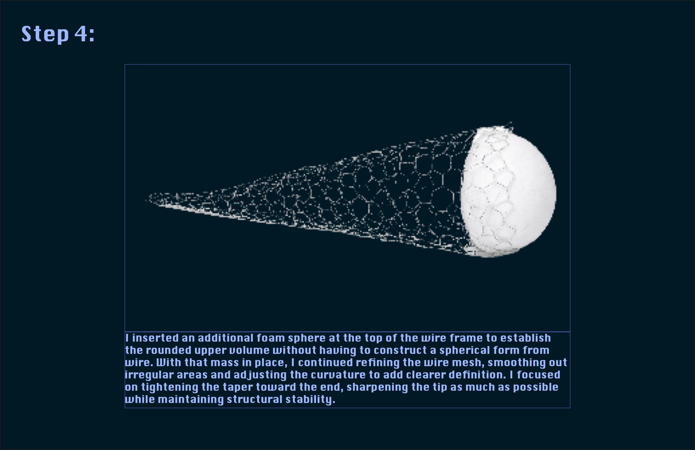
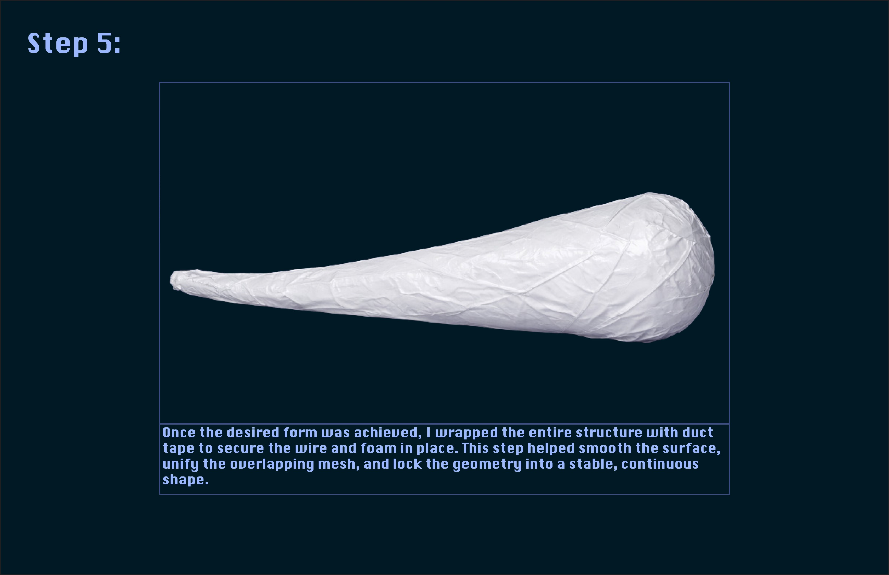
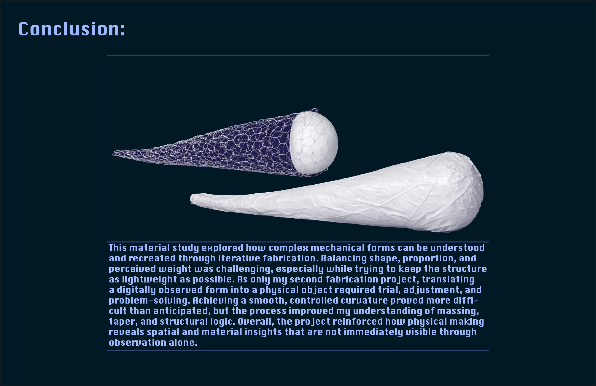

Terminator Spider Leg Fabrication
Role
Fabrication Design and Model Construction
Focus
Material exploration, structural logic, weight, safety, and translating digital reference into physical form
Deliverable
Physical fabrication study of a spider leg scenic element inspired by Terminator 2: 3D
Overview
This fabrication project explores how a scenic element from the Terminator 2: 3D attraction could be physically constructed for a theme park environment. Inspired by the work of Bezark, which designed the original attraction, I focused on recreating one of the spider-like mechanical legs as if it were an installed show element.
Rather than simply reproducing the visual form, the project considered practical fabrication concerns such as weight, structural stability, installation, and safety. The leg appears heavy and metallic in the original attraction, but it would realistically rely on a lightweight internal structure with outer surface panels to achieve dramatic scale without excessive weight.
Concept Reference

The spider leg extends outward over the audience as a large mechanical appendage designed to feel aggressive and heavy. Its form transitions from a curved upper segment into a straight vertical shaft before bending sharply near the base. Although it appears to be solid chrome metal, the structure would realistically rely on a lightweight internal framework concealed beneath reflective shell panels.
Project Inspiration
This project was inspired by Bezark’s design work for Terminator 2: 3D, which combined film, theatrical staging, scenic fabrication, and immersive themed entertainment design. Their work helped shape the visual language and mechanical presence of the attraction.
Reference: Bezark — Terminator 2: 3D
Pre-Production

In Photoshop, I isolated the lower portion of the leg to study the curvature and geometry more clearly. In Illustrator, the segment was traced and simplified into a 3D extrusion to better understand the spatial transition and directional movement of the form.

The model was constructed using foam half spheres, foam cones, chicken wire, and duct tape. These materials allowed the form to remain lightweight while still maintaining structural stability and curvature.
Process

Step 1: A foam half sphere and foam cone were combined to establish the overall massing and curvature of the leg.

Step 2: The foam was carved and refined to shape a smooth taper and pointed tip.

Step 3: Chicken wire was wrapped around the foam to establish the larger structural volume.

Step 4: Additional foam was inserted and the wire mesh was refined to sharpen the taper and curvature.

Step 5: The entire structure was wrapped in duct tape to secure the materials and create a unified outer surface.
Reflection

This fabrication study explored how complex mechanical forms can be translated into physical structures through iterative making. Balancing shape, proportion, and perceived weight required multiple adjustments during construction. The process improved my understanding of taper, massing, and structural logic while demonstrating how physical fabrication reveals spatial insights that are not immediately visible through observation alone.